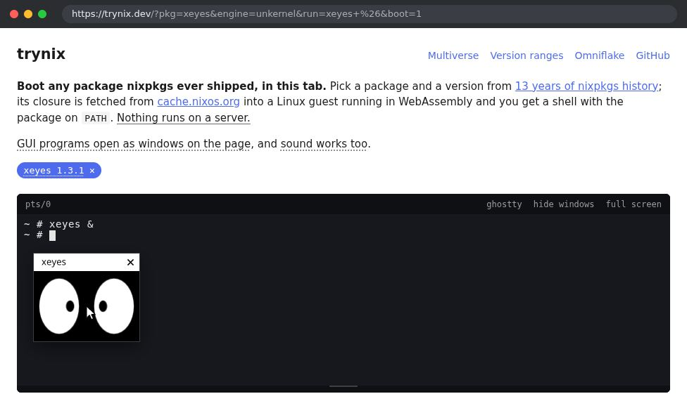

85科技/AI · 1
2035 Came Early：Linux 编译成 WebAssembly，浏览器里跑 30 万个 Nix 包（HN 184 分）
博主 Farid Zakaria 把约 30 万个 Nix 软件包版本搬进浏览器，白天他采用 11 月 19 日刚发布的 unkernel 引擎——把 Linux 内核编译到 WebAssembly、只模拟用户程序，实测比 qemu-wasm 快 2 到 32 倍。trynix.dev 现在能从网页直接启动 solitaire、GL gears、Firefox 乃至用 curl 查天气，还实现了跨浏览器的「Firefox 套 Firefox」递归演示。当日 Hacker News 拿到 184 分、31 条评论，是下午讨论最集中的技术帖。作者借 Gary Bernhardt 的旧演讲感慨，AI 让「2035 年 JavaScript 统治一切」的预言提前到来。
Hacker News · 原文 →